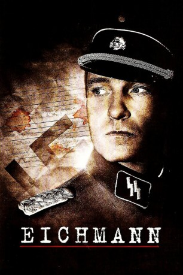
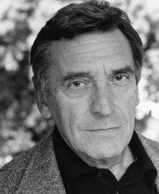
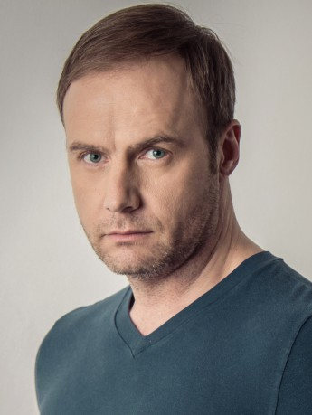

#9757 Eichmann
 
 IMDB-Wertung: 5.9 / 10
IMDB-Wertung: 5.9 / 10  Metascore: 0
Metascore: 0 
Karl Adolf Eichmann wurde im Jahre 1906 in Solingen, NRW geboren. Während des Zweiten Weltkriegs stieg er zum SS-Obersturmbannführer auf und zeichnete sich zentral für die Ermordung von mehr als 6 Millionen Juden in den Konzentrationslagern mitverantwortlich. 15 Jahre nach Beendigung des Zweiten Weltkriegs, im Jahre 1960, entführt ihn der israelische Geheimdienst aus seinem argentinischen Exil und macht ihm letztendlich in Tel Aviv den Prozess. Weitere zwei Jahre später wurde Eichmann zum Tode verurteilt und hingerichtet. Der Film basiert auf dem Geständnis von Eichmann und den Untersuchungen während des ihm gemachten Prozesses. Dabei kommen erschreckende und menschenverachtende Details zutage, die nicht nur Captain Avner Less und seine Frau zutiefst schockieren...
Jahr: 2007
Dauer: 96 Minuten
FSK: 16
Land: Ungarn Studio: Edel Media & EntertainmentTonspuren:
Untertitel:
Auflösung: 1080p (1920x1040) Größe: 4444 MB
Genre: Drama, Krieg, Geschichte, Biographie
Regisseur:  Robert Young
Robert Young
Drehbuch: Snoo Wilson
Soundtrack: Richard Harvey
Darsteller:
 Thomas Kretschmann als Adolf Eichmann
Thomas Kretschmann als Adolf Eichmann Troy Garity als Avner Less
Troy Garity als Avner Less Franka Potente als Vera Less
Franka Potente als Vera Less Stephen Fry als Minister Tormer
Stephen Fry als Minister Tormer- Delaine Yates als Miriam Fröhlich
- Tereza Srbova als Baroness Ingrid von Ihama
-  Stephen Greif als Hans Lipmann
 Scott Alexander Young als Robert Servatius
Scott Alexander Young als Robert Servatius-  Gyula Mesterházy als Nazi Official
- Avner W. Less als Himself (archive footage)
- Judit Viktor als Ann Marie
- Dénes Bernáth als Benjamin
- Bernadett Kis als Sarah
- Tilly O'Neil als Hannah
- László Bereczki als David
- Alexis Latham als Dubois
- Béla Fesztbaum als Dr. Kastner
- Melissa Franklyn als Policewoman
- Péter Ambrus als Abraham Less
- Péter Geltz als Old Guard
- Máté Endrédi als Young Guard
- Nikolett P. Jancsovics als Ruth
- Kerstin Sekimoto als Secretary
- Eszter Palóc als Woman Interpreter
- Andrew Hefler als Young Doctor
- Péter Laczó als Dieter Eichmann
- Krisztián Vörös als Klaus Eichmann
- Ádám Vadas als Horst Eichmann
- Viktor Noé als SS Officer
- László Barnák als Night Guard (Young)
- Shy Heller als Night Guard (Old)
- Richard Rifkin als Elderly Man
- János Mercs als French Speaking Officer
- Attila Müller als Eichmann's Chauffeur
- István Göz als German Interpreter
- Abdul Sattar Rehani als Husseini
- Stephen Buhagiar als Locksmith
- John Baddeley als Radio Presenter
- Anna Cachia als Protester (uncredited)
- Brenda Camilleri als Protester (uncredited)
- Heinrich Himmler als Himself (archive footage) (uncredited)
- Ilona Kassai als Mrs. Schaffhausen (uncredited)
- Samuel Montague als Delivery Boy (uncredited)
- Oliver Simor als Telephone Operator (uncredited)
Datei: X:\2007(A-F)\Eichmann (2007, FSK16, 1920x1040).mkv seit 27.10.2018
Festplatte: HD 2007(A-Z)-2008(A-F)
 Es gibt insgesamt 65 Filme in der Gruppe '2007(A-F)'
Es gibt insgesamt 65 Filme in der Gruppe '2007(A-F)'